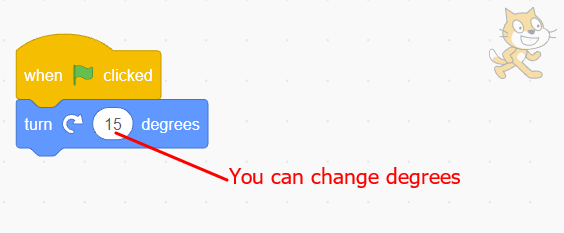

- 3. Click on the ‘Motion’ block menu.
- 4. Drag and drop the ‘turn (↻) degrees’ block on the script area.
- 5. Attach the ‘turn (↻) degrees’ block to the ‘when clicked’ block as shown in Figure 26.

Figure 26: After attaching the ‘turn degrees()’ block to the ‘when clicked’ block
- 6. Click on the ‘Green flag’ to play your program.
-
7. Continue playing to see how the Sprite rotates.You can change the degrees from 15 to 45 to see more about how the Sprite rotates.What did you notice after changing the degrees?
Activity 8
Creating a ‘go to anywhere’ game
To create a ‘go to anywhere’ game, follow these steps:
Steps
- 1. Click on the ‘Events’ block menu.